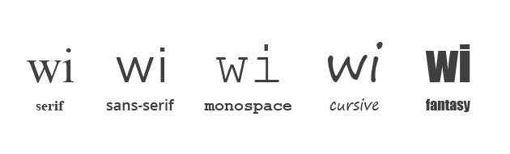
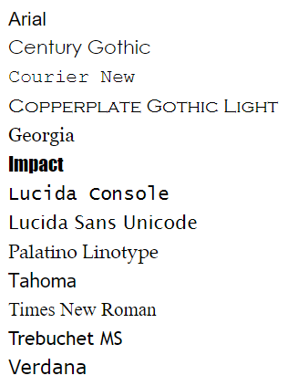

CZCIONKI

Zanim zaczniemy zagłębiać się w sposobach formatowania tekstu, musimy się trochę więcej dowiedzieć o czcionkach, czy jak kto woli krojach pisma.
Rozróżniamy 5 rodzajów czcionek, które wyglądają następująco:
Wcześniej wspominaliśmy o tym, że aby czcionka została prawidłowo wyświetlona na naszym ekranie, musi być ona najpierw zainstalowana na naszym systemie operacyjnym. Można oczywiście samemu pobierać i instalować czcionki, ale większość użytkowników tego nie robi. To skąd mamy wiedzieć, czy dana czcionka zostanie prawidłowo wyświetlona na urządzeniu naszego odbiorcy, skoro na każdym systemie operacyjnym mamy inny zestaw dostępnych czcionek? Tu właśnie pojawia się problem zgodności pomiędzy systemami operacyjnymi. Możemy to w zasadzie obejść na dwa sposoby. Możemy użyć czcionek, które są dostępne na większości urządzeń (ang. Web Safe Fonts), bądź możemy dodać konkretną czcionkę na naszą stronę internetową, tak aby każdy użytkownik bez konieczności instalowania, mógł z niej korzystać na naszej stronie. Zapoznajmy się z tzw. bezpiecznymi czcionkami oraz sposobami dodawania czcionek na stronę.
font-family: Arial;
font-family: 'Century Gothic';
font-family: 'Courier New';
font-family: 'Copperplate Gothic Light';
font-family: Georgia;
font-family: Impact;
font-family: 'Lucida Console';
font-family: 'Lucida Sans Unicode';
font-family: 'Palatino Linotype';
font-family: Tahoma;
font-family: 'Times New Roman';
font-family: 'Trebuchet MS';
font-family: Verdana;
Wyżej wymienione czcionki wyglądają następująco:
Implementowanie czcionki
Wraz z pojawieniem się CSS3 wprowadzono również możliwość dołączania czcionki w oddzielnym pliku. Czcionka nie zostanie zainstalowana na naszym komputerze, będziemy jedynie korzystać z niej w czasie odwiedzania danej strony. Nie będziemy tu dokładnie omawiać sposobu jej dołączania, bo to temat na oddzielny artykuł zademonstrujemy jedynie w jaki sposób można tego dokonać.
Czcionkę pobieramy z internetu, a następnie pliki z czcionką dodajemy do naszej strony. W pliku głównym CSS dodajemy odwołania do plików czcionki poprzez zastosowanie własności @font-face. Musimy pamiętać, aby odwołania z pliku CSS zgadzały się z faktycznym miejscem przechowywania plików czcionki.
Google Fonts
Znacznie szybciej i wygodniej dodamy czcionki na swoją stronę przy pomocy takich projektów jak Google Fonts. W tym google’owski projekcie dostępnych jest kilkaset darmowych czcionek gotowych do zaimplementowania na naszą stronę. Podane są tam dokładne instrukcje jak tego dokonać, także myślę, że nie trzeba dłużej tego tłumaczyć.